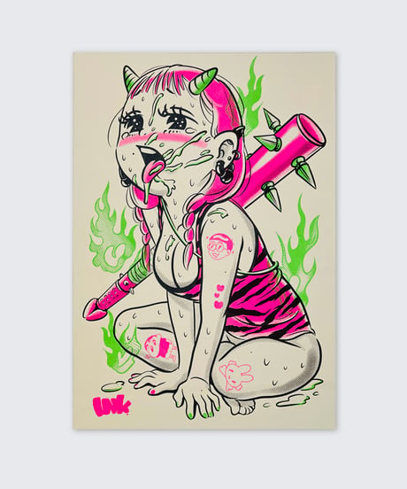
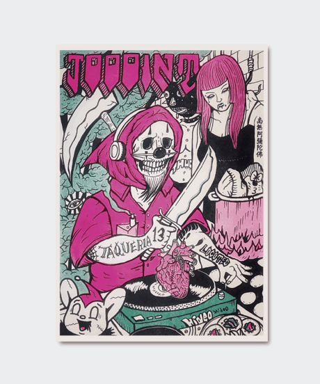
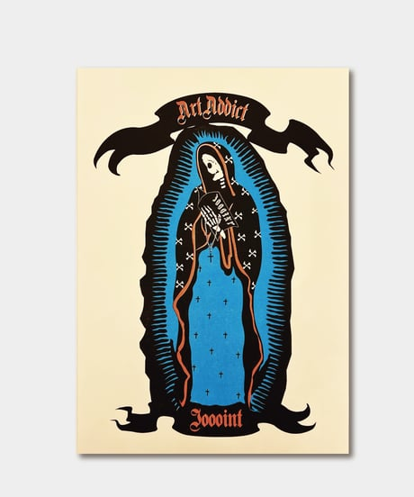
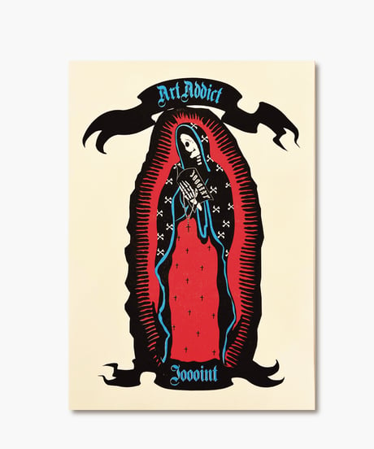
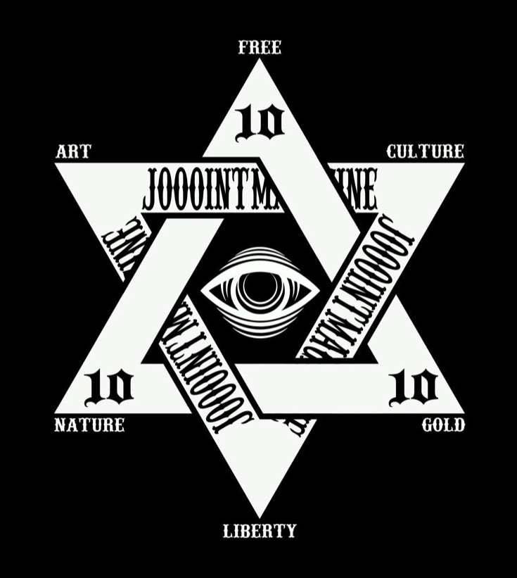

Cover: ゴトウヒデオ
FEATURED ISSUE
NO.13
COVER / ゴトウヒデオART
ON PAPER.
COVER / ゴトウヒデオART
ON PAPER.
01 / THE COLLECTION
ISSUE ARCHIVE
表紙から、JOOOINTの世界へ。
Cover: ERROR MIND WORK SHOP
Cover: chanyamaINK
2nd Anniversary / フルカラー特別号
Cover: minaQ
JOOOINT MAGAZINE
JOOOINT MAGAZINE
JOOOINT MAGAZINE
JOOOINT MAGAZINE
JOOOINT MAGAZINE
JOOOINT MAGAZINE
JOOOINT MAGAZINE
JOOOINT MAGAZINE
02 / ART PRINTS
RISOGRAPH
紙とインクで、作品を手元に。

鬼姫
RISOGRAPH · COA付ARTIST / chanyamaINK
商品を見る

死神タケリア
RISOGRAPH · COA付ARTIST / ゴトウヒデオ
商品を見る

Art addict. / Cyan
RISOGRAPH · COA付商品を見る

Art addict. / Red
RISOGRAPH · COA付商品を見る
仕様・付属品・在庫状況は、各商品ページでご確認ください。
JOOOINT GALLERYを見る03 / WHO WE ARE
INDEPENDENT.ON PAPER.
好きな表現が、
誰かの手に届くまで。
JOOOINT MAGAZINEは、2023年に始まったアートマガジン。さまざまな作家の作品を、一冊の紙の上でつなぎます。
ページをめくる。気になる絵に出会う。そこから新しい作家を知る。画面の外にも、表現と出会える場所を。
2023ESTABLISHED
B6PRINT FORMAT
ART & CULTUREOUR ROOTS

LET'S JOOOINT.
掲載・お取り扱いのお問い合わせは、InstagramのDMへ。